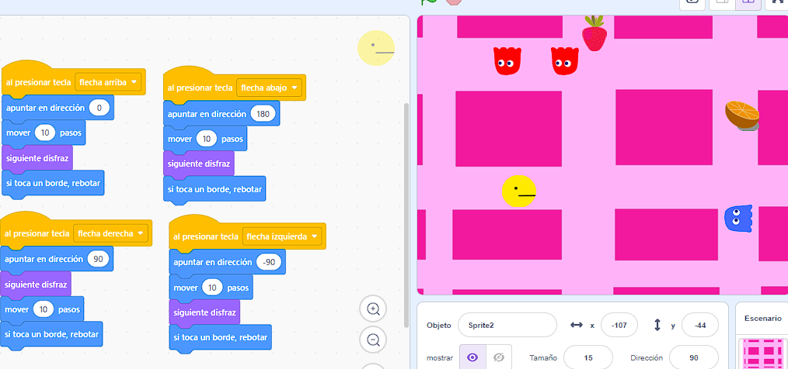
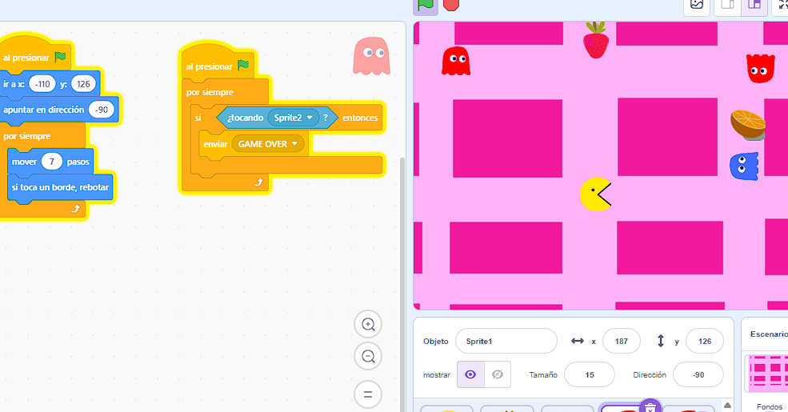
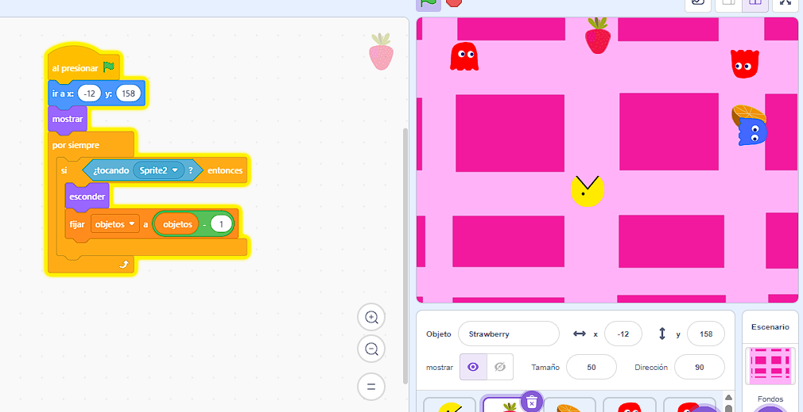
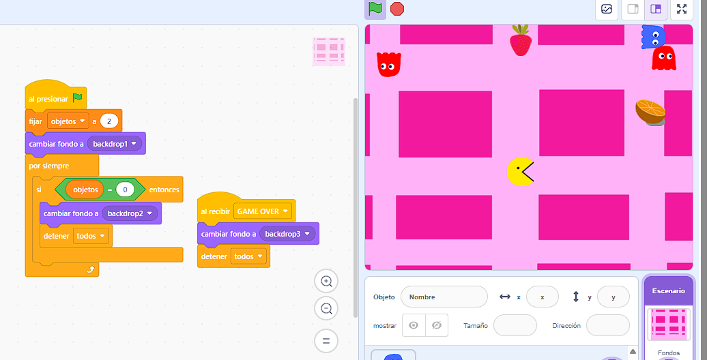

Segundas actividades en Scratch
En este caso, realizamos los ejercicios propuestos en Scratch, creando un juego de laberinto y un juego de Pac-Man. A través de estas actividades, pudimos conocer mejor las herramientas del programa y poner en práctica la programación mediante bloques, utilizando instrucciones para controlar los movimientos de los personajes y establecer el funcionamiento de cada juego.
En el juego del laberinto, trabajamos con el desplazamiento de un personaje por un recorrido, procurando que pudiera llegar a la meta sin tocar las paredes. En el juego de Pac-Man, trabajamos con los movimientos del personaje y la dinámica de recorrer el escenario para recoger los elementos del juego.
Una vez finalizados los ejercicios, guardamos los proyectos en nuestras cuentas de Scratch y realizamos capturas de pantalla para registrar el trabajo.
────────── ⋆⋅☆⋅⋆ ──────────
Actividad: Laberinto


✦•┈๑⋅⋯ ⋯⋅๑┈·✦
Actividad: Pac-Man








✦•┈๑⋅⋯ ⋯⋅๑┈·✦
Reflexión sobre su aplicación en la especialidad de Idioma Español
Consideramos que Scratch ofrece distintas posibilidades para nuestras prácticas de Idioma Español, ya que permite crear actividades interactivas que pueden ayudar a trabajar los contenidos de una manera más dinámica y atractiva para los estudiantes.
Por ejemplo, podríamos adaptar el juego del laberinto para trabajar con categorías gramaticales. El personaje tendría que recorrer diferentes caminos y elegir el correcto según las consignas que aparezcan en pantalla. Para avanzar, los estudiantes podrían tener que identificar sustantivos, adjetivos, verbos o pronombres, entre otros contenidos. También podríamos utilizarlo para trabajar la comprensión lectora, presentando preguntas sobre un texto y haciendo que cada respuesta correcta permita avanzar hacia la meta.
En el caso de Pac-Man, podríamos adaptar el juego para que el personaje recoja palabras que cumplan determinadas condiciones. Por ejemplo, podría tener que encontrar sinónimos, reconocer antónimos, identificar palabras según su acentuación o seleccionar aquellas que pertenezcan a un determinado campo semántico.
Creemos que estas propuestas podrían favorecer la motivación y la participación de los estudiantes, ya que les permitirían aprender y repasar contenidos a través del juego. Además, Scratch ofrece la posibilidad de adaptar las actividades a las edades, los intereses y las necesidades de cada grupo.
De todos modos, consideramos que estos recursos deberían utilizarse como un complemento de otras propuestas didácticas y no como un fin en sí mismos. Lo importante sería que el juego tuviera un objetivo de aprendizaje claro y que estuviera relacionado con los contenidos que estamos trabajando en clase. De esta manera, podríamos integrar la tecnología a nuestras prácticas de Idioma Español de forma creativa y significativa.